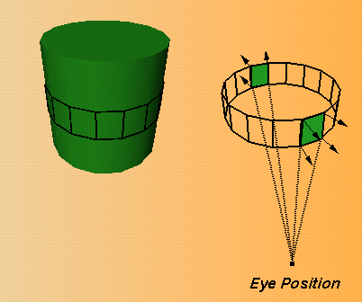

The object space vertex culling extension, SGI_cull_vertex, introduces a method for culling vertexes in object space. Object space vertex culling can be more efficient than screen space polygon culling because it makes it possible to avoid many vertex operations such as clipping and window transformation.
This section first discusses How Vertex Space Culling Works, then provides information on How to Use Vertex Culling and lists New Functions.
The extension works like this:
Vertex culling is performed independently of face culling. Polygons on the silhouettes of objects may have both front- and back-facing vertexes. Because polygons are culled only when all their vertexes are culled, you may have to use face culling in addition to vertex culling in order to correctly cull silhouette polygons.
OpenGL can do vertex culling before all other transformations; as a result, fewer transformations are necessary--this usually improves performance. Early culling allows OpenGL to avoid transformation to window coordinates because the eyepoint in object space is defined. (Note that for culling in screen space, OpenGL has to perform transformation to window coordinates.) This is an advantage for all vertexes, not just for meshes.
Vertex culling is applied not only to polygons but also to all other primitives, such as points or lines.
Using the object space vertex culling extension involves two steps:
When GL_CULL_VERTEX is enabled, OpenGL classifies vertexes as front or back facing according to the sign of the dot product between the normal at the vertex and an eye direction.
Vertexes are culled when the face orientation determined by the dot product is the same as the face specified by glCullFace(). When all the vertexes of a polygon are culled, the polygon is culled.
The eye direction used for vertex culling is determined by the culling eye position. The culling eye position is homogeneous (like a light position). When the w component of the position is non-zero, the position is local and the eye direction at each vertex is computed by subtracting the vertex position from the eye position. When the w component of the position is zero, the position is non-local and is used as the eye direction for all vertexes. In other words, use the local position as the eye direction if the current transformation is perspective, and use a non-local eye direction if the current transformation is ortho.

Figure 3-2 : Vertex Culling
The specification of the culling eye position is closely linked to the projection transformation. For correct results, the culling eye position should correspond to the center of projection mapped to object space.
Specifying the correct position can be tricky, but the following guidelines usually make it possible:
glCullParameter(GL_CULL_EYE_POSITION_SGI(0, 0, 0, 1));
glCullParameter(GL_CULL_EYE_POSITION_SGI(0, 0, 1, 0));
To specify the culling eye position, call glCullParameter*SGI().
The following brief example first specifies a view position, then enables vertex culling:
GLfloat viewPos[4] = {0.0, 0.0, 0.0, 1.0}
glCullParameterfv(GL_CULL_EYE_POSITION_SGI, viewPose);
glEnable(GL_CULL_VERTEX);
void glCullParameterfvSGI (enum pname, float *params)